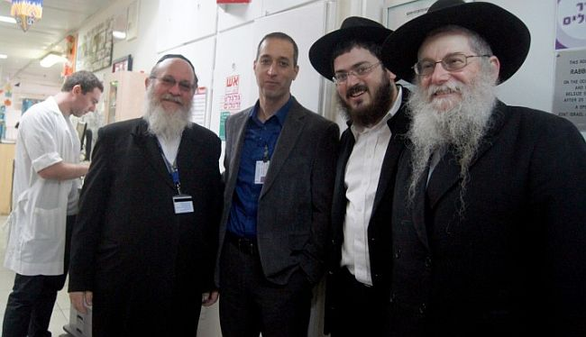

Bringing Professionalism to Shlichus Work
These young men have burst upon the shlichus scene and have demonstrated expertise in management, marketing, public relations, external and internal networking, becoming consultants on a variety of subjects; giving shiurim, accounting, fundraising, public speaking, forging personal connections and finding people’s areas of receptivity in order to reach their hearts and minds. * How do they do it? When did they manage to study and develop expertise in their fields? How important is it for a shliach to attend professional courses? Isn’t it enough to just be a “Chassidishe yungerman?” * Menachem Ziegelboim takes us behind the scenes of the modern-day world of shluchim for the very first time, and investigates from the inside to discover their recipes for success in their chosen holy-profession.

“Once a year, there is a gathering of shluchim who come from all over the world. It is amazing to see them each time when they return to ‘home base,’ each one from his corner of the world, and to see both young and old who guide their communities with wisdom and skill, some of whom have built communal empires. It is a phenomenon that inspires and astonishes.
“In their not so distant pasts, nearly all of them were young students in Chabad yeshivos, lacking any experience in fields that deal with the world at large.
“One day, each one on his own, decided to jump into the deep waters of the world of shlichus and begin to swim; not without fear, but with a lot of personal courage. These young men burst upon the scene, and began developing expertise in management, marketing, public relations, external and internal networking, becoming consultants on a variety of subjects; giving shiurim, accounting, fundraising, public speaking, forging personal connections and finding people’s areas of receptivity to reach their hearts and minds.
“Each one of these professions, and many more that I did not list, is a subject that is studied in professional courses over many long weeks and months, and some, even years. Each is a serious area of expertise on its own, and a fascinating world unto itself.
“And suddenly, these with no professional background become directors of institutions or communities, local leaders, charismatic speakers, expert advisers and fundraisers, along with a long list of other jobs.
“The shluchim of the Rebbe can speak of the many successes they have achieved in the course of carrying out their shlichus: one built a beautiful shul, the other established a community, this one founded a successful school, and so-and-so is known for his extensive connections with the local head of government or the leaders of his country. Undoubtedly, these are impressive accomplishments…”
Further in the article, I go on about the causes for these incredible successes with, first and foremost, the blessings of the Rebbe and the endless energies that he bestows upon his emissaries. After all, “a man’s emissary is like himself.”
THE REBBE WANTS PROFESSIONALISM
When you look at the shluchim, you see refined individuals, younger and older, whose faces testify to their refinement and blessed origins, yeshiva graduates whose everyday conversation is about complex ideas in Chassidus or Gemara. Then, one day, they begin to turn over the world with their know-how, talents and professionalism.
People will often speak of the successes of the shluchim in bringing their fellow Jews close to their Father in Heaven and to the teachings of Chassidus, but it turns out that behind all those successes, there is a lot of hard work in developing expertise, acquiring knowledge, and bridging huge gaps.
The shluchim do not always have the time to devote directly to those areas of development, since from the very first morning on shlichus, they need to meet with people, shake hands, present themselves with warmth and in a proper manner (a course on self-marketing), to begin thinking about how to best fill their day in the most effective manner (a course on time management), and what are my goals on shlichus (a course in strategic planning). How can I see to it that the entire city or neighborhood will get to know me (a course on branding), and where will I be sending my Mendy and Mushky to school in the not so distant future (a course on building educational institutions), as well as how am I going to come up with the rent deposit for the Chabad House that I found at an amazing price in the local mall (a course on fundraising). All of that, before I have prepared a sicha to review the coming Shabbos in the local shul, which should hopefully make a good impression and get them to invite me to come speak every Shabbos (a course in public speaking).
Now, there will be those who argue that in the last fifty years, thousands of shluchim have gone out and succeeded without these courses, so who really needs them?
First of all, the Rebbe asked for this. In a letter that the Rebbe wrote to the shluchim sent to the Holy Land, not long after they set out (dated Rosh Chodesh Shevat 5739), the Rebbe set the course for them as to how to operate on their shlichus. In that letter, the Rebbe writes, “It is both obvious and simple that for the success of all of the above, there is a need for the advanced study of the shluchim, also in their personal lives and personal matters… advanced study that relates to practical application in the fields of education and communal work etc.” (It is also important to mention that in the fields of education and classroom instruction, the Rebbe pushed for the establishment of advanced professional courses, and encouraged many young men to take these courses.)
It seems that as a result of the rapid advances in the world today, and the incredible explosion of enrichment courses in every possible field of endeavor, along with unprecedented access to a wealth of expertise, organizers of the various shluchim conventions in the Holy Land, in America, and around the world, have begun incorporating into those conventions a series of professional courses in a variety of fields that the shluchim can benefit from.
Based on the packed halls and the lively participation, it seems to me that the shluchim have internalized the idea that the acquisition of expert knowledge is necessary for success in their work, and it is hardly enough to rely on the intuition of a yeshiva graduate, a “tamim.”
From conversations with the shluchim, it turns out that in addition to the investment of energy and resources in the spiritual side of things, which is obviously the main facet of shlichus work, and which brings with it the amazing blessings and empowerment of the Rebbe for success in that work, there is also a need for “vessels” to contain it all. One of the important “vessels” is professionalism.
“The instruction to acquire professional skills was already given by the Rebbe Rayatz to my father, when he went on shlichus to Chicago,” said Rabbi Menachem Mendel Lieberman, shliach in Ashkelon. He has founded many beautiful mosdos and has twenty-five shluchim under him. “My father learned English and also brushed up in other fields that he thought he needed back then.”
The conversation I had with R’ Lieberman, a veteran shliach in Eretz Yisroel, was fascinating.
“When you take your child to the doctor, you won’t take him to someone who studied medicine fifty years ago, but to a doctor who is up-to-date. This is because the field of medicine is constantly developing. The same is true for other fields; you need to study how to retain people, how to raise money, how to properly use your talents. Even giving a class on a sicha requires knowing how to prepare and how to present it in a way that will interest your audience; otherwise, they won’t come anymore.”
Rabbi Lieberman himself has taken many enrichment classes over the years and has studied various subjects necessary for his shlichus work. At HaMerkaz HaYisraeli l’Hadracha he studied how to develop management skills. At the training center based on the Dale Carnegie system, he did skills training in marketing, how to properly present himself, how to establish goals, set an order of priorities, public speaking, how to be an effective fundraiser, and more.
Rabbi Lieberman, how do you view the way things are currently being run by the shluchim?
In a letter to a distinguished Chassid, the Rebbe writes what his expectations are from a shliach sent to work in a certain city. The Rebbe emphasizes that shluchim need to be leaders who will operate an entire community and flourishing mosdos. The letter goes on to say that the Rebbe chose the word “leader” specifically, and not rav, “because, according to my view, they can arrange it that under his leadership there will be a rav, a teacher of children, a shochet, and various mosdos…”
When a shliach goes to a city or neighborhood, it’s not enough to know how to nicely say a sicha or put tefillin on with someone on the street. It’s not enough that he’s an excellent maggid shiur, a talmid chacham, a Chassidishe Yid. He needs to run a community and mosdos, and for that he needs to know how to keep the Chabad House accounts, for example, and a whole array of things which aren’t “extras,” but necessities.
Michael E. Gerber, referred to as “the number one small business guru” (and who has, in recent years, come close to Chabad), gives an interesting example. A carpenter’s apprentice learns the trade from a master carpenter. Ten years later he himself has become an expert carpenter. He is confident enough to open his own carpentry shop, but he quickly fails. Not only he, but 95% of professionals fail. Why? Because the fact that you know carpentry does not turn you into a good businessman. A carpenter is not just someone who knows how to cut wood and connect the pieces; he also needs to know how to purchase good merchandise at a good price, to sell at a profit, to manage inventory and warehousing, to market, and a whole host of other things. If you want to open a carpentry shop, aside from knowledge of carpentry, you also need to develop a variety of professional skills.
Now the next stage. A carpenter doesn’t have time to both build closets and take care of all the details of his business. He has to bring in an apprentice to do the work instead of him which frees him up to run the business in the best way.
What Gerber says is that if you are the shliach appointed over your city, for example, you need to work on the organization, not in it. You need to be a leader, not a manager. You don’t need to be the musician who plays in the band; you need to be the conductor who gets all the instruments working in unison and sees to it that each one plays to the best of his ability. You need to think about how your organization can expand its reach to the maximum and not be satisfied with the circle of five hundred people in your sphere of acquaintance.
Am I hearing a tad of implied criticism in your words?
Take a look for yourself. The Rebbe’s shluchim have been operating all over Eretz Yisroel and the world for more than sixty years. It’s high time that a proper operational model be created with which they will expand their circle of influence and conquer the world.
Let me give you an example. When I came to Ashkelon thirty-five years ago, everyone shopped in small grocery stores. By now we have nice supermarkets. There are chains that opened huge stores here filled with large selections, offering optimal comfort and low prices. Thousands shop in them. Should the public continue shopping in small grocery stores?
The same is true for shlichus. In an average Israeli city there are more than 100,000 Jews. If the shliach goes out to the street every day for thirty years and all he does is put tefillin on with people from morning till sunset, and in the evening he gives shiurim – although this is avodas ha’kodesh, and definitely carrying out the Rebbe’s mivtzaim, if he was given responsibility for a city and is only having a limited influence on dozens of people, is this why the Rebbe invested kochos in him and made him his shliach in a city, state or country? Does the Rebbe expect us to remain in the same small grocery store or to become Rami Levy (who built a supermarket empire from scratch)? A shliach can and must develop an empire of shlichus in his city!
Take Yad Sarah as an example. It’s an important organization that lends medical equipment, which was started long after Chabad. Within a short time, everyone knew the name and the brand, and they’ve built a beloved name for themselves that is admired everywhere. They have wheelchairs, and that’s important, but we are offering the most important items for the Jewish people in Eretz Yisroel and the world. What we are offering is no less important than the crutches that Yad Sarah lends out. People stand on line to get into Yad Sarah; why aren’t there lines of people at Chabad Houses?
Without mentioning names, there is a kiruv organization that was started a decade ago. They fill large halls every night, they have an internet site with millions of hits a month, they are enormously popular, and thanks to that they raise millions of dollars for their projects; where are we?
How do you explain their success?
They operate by the book. It is very much a question of proper marketing. We still have shluchim who are working on the old system of begging for handouts, while they are mobilizing resources. That’s the difference.
You’re talking only about a difference in fundraising?
No, that was just an example. The same is true for a proper order of priorities. I once heard a talk by the shliach, Rabbi Eliyahu Shusterman of Atlanta. After several years on shlichus, he had a dilemma. He wanted to build a building for his activities, but he simply hadn’t gotten to that level. He did nice work; on Sunday he had a program for young couples, on Tuesday with older people, and programming several times a week for kids; mivtza tefillin and home visits. It was all good and well, but he needed a building and all those activities would not help him achieve that goal.
He sat and thought. If he wanted a building in another five years, then in four years he had to start building. In three years he needed all the plans and permits and that meant he needed a group of supporters to help him. In two years he needed to be in touch with a host of potential donors and that meant that he had to start making contacts with his initial donors. But he had no time, he was busy!
Then he made the proper order of priorities. He stopped some of his activities and used that time to start working on connecting with donors. Today he has a magnificent building which his home to all his many programs and much more than what he had previously.
A shliach must study and establish his priorities. If his abilities are limited to one mivtza of the Rebbe, that’s what he should do. But if he has the ability to lead an entire community, he needs to bring another shliach to his city who will focus on tefillin and the other mivtzaim, while he establishes a community, a school, etc. You need to think – what is your shlichus and how can you bring a message of Judaism and Chassidus to every Jew in the city.
For this purpose, you need to acquire the knowledge and skills to set realistic goals, how to make an order of priorities, how to raise funds. There is no other way. The world stands on three things: money, money and money. This is also very important.
THIS IS HOW A SHLIACH CAN REACH 150,000 PEOPLE
Looking through the archives of press releases and news reports, I found that at the annual Kinus HaShluchim in Eretz Yisroel, there is an array of professional workshops. One year it was reported that there was a workshop on how to plan and execute a successful dinner, with Rabbi Ziv Katzbi from the Chabad House in Ramat HaSharon, and a workshop on the subject of “defining roles and assessing workers in a Chabad House” given by Rabbi Yochanan Butman, director of the Chabad House in Chadera and Mr. Shachar Tzadok, director of Machon Shachar for the testing and assessment of human resources.
I also found that the main workshop, which attracted many shluchim, was about customer retention; proper handling of requests for assistance, proper management during high stress times in the office, upgrading the quality of initial contacts with an eye toward long term retention, given by Tal Arnon of Shesek, a strategic consulting firm and former director of Audi Israel, as well as Shai Landman, marketing director.
Another workshop, which was run by shluchim, dealt with the key events of the yearly cycle and the in-between times, with the participation of experienced directors of activities, who offered up new ideas for programming, including: establishing after school clubs within schools to inculcate Jewish values, bar mitzva classes, and tips and practical advice.
At the main session of the convention, shluchim were offered professional guidance in messaging and persuasion by Dr. Yossi Bar, a member of the rhetoric faculty at the University of Haifa. Another workshop dealt with the internet. There was a discussion on “Who Needs It?” about the advantages and disadvantages of the internet as a tool; essential or superfluous, complex or simple? One of the participants was R’ Yosef Mor Yosef, director of Chabad on the Web, who offered some insights for our readers.
“I deal with two fields that relate to the shluchim. One is website development and management services which I offer, the other being community and donor management via technology.”
R’ Yossi points his finger at what, from his point of view, is the heart of the problem, “Shluchim have a certain sphere of contacts of a few hundred people that they have some degree of contact with, and that is who they work with. But this circle needs to grow dramatically, especially if you oversee a city that is growing and expanding, and has a population of 150,000. When a shliach wakes up in the morning, he has to ask himself, ‘How am I going to reach every one of these people?’ And not only those people who walk into the Chabad House or show up to shul.
“Today, it is easier than ever before, because the internet provides the solution and the means to reach places on a larger scale than was ever possible to manage on your own. And all of that with a few clicks on a computer.”
Can you provide examples?
Certainly. Every Jew has points of contact in his life which require him to confront his Judaism; whether it is a bris mila, a bar mitzva, or a memorial service etc. How do they find the person that they need to provide that service? Like everything else nowadays, he does a google search. People who don’t know you are doing a google search for ‘bar mitzva preparation,’ and you the shliach must come up on the first page of the search, so that he will find you and pick up a telephone to call you. To date, we have managed to bring many Chabad Houses to the point that when someone inputs any Jewish concept into a search, the Chabad House comes up first and they turn to the shliach. So for example, if I put in ‘bar mitzva preparation in Holon,’ I will reach the Chabad House in Holon, and if I write ‘children’s day camp in Raanana,’ the first listing in the search results will be the Chabad day camp.
You have addressed the shluchim on more than one occasion, and you try to push them to become more professional. Are the shluchim responding to that message?
I think it breaks down into two groups. There are those that understand that this is a new world and this is how it works, and therefore they need to have a presence there. And then there are those that still work with the older approaches of yesteryear. The most difficult problem is those that agree to get involved and use the tools of the virtual world, who still work exclusively inside their closed community. So yeah, people can mostly be reached via the social networks, and it is important that you have a presence there too, but you are still only working with your “friends” or even the friends of your friends. These are still your immediate social circles. The same applies to the use of WhatsApp.
Shluchim need to understand that if they want to reach more than 1200 people maximum, they need to up their professional game and invest in virtual outreach, through which they can extend their reach to everywhere.
R’ Yossi, seriously, a shliach who sees himself as an emissary of the Rebbe, a respected Torah personage who can teach a maamer or review a sicha, and who can build people up through meaningful heart to heart talks, needs to be wasting his day trying to notch a few more “likes?”
“I understand where you are coming from with your question, but today that is where everybody is, the internet. So although it is correct to say that a shliach shouldn’t waste his time trying to put up posts that will be a hit, if you want to reach more people you have to find the way. Give the job to someone that you rely on, or a professional, to deal with it and do the work for you. But there is no excuse to pass up on such a large number of Jews to whom the Rebbe sent you to connect with.
“I would like to add, that when you promote yourself on the internet you are building standing for yourself. You reach people who never heard of you and they learn to appreciate what you are doing and building. Then, when you show up at the local government office and want to make a presentation about your work, or you want to request a lot to build on, for example, they will look at you in a whole different light. You are not some anonymous character who just dropped in out of nowhere. You are no longer an individual Chabad activist, but an organization.”
R’ Yossi Mor Yosef has been working lately on a project called “shekel ha’kodesh,” which is a sort of community interface, suitable for shluchim who have communities and need to run them efficiently. The project has produced a technological tool that enables optimal community management; to know who has a birthday or a yahrtzait coming up, who needs to be called up to the Torah, who donated, and tracking income and expenses. These are important issues for anyone who leads a community and needs to keep track of a seemingly infinite number of details. You can run this tool on your smartphone, and obviously off the computer in the Chabad House.
In his words, “I think that today there is a greater level of awareness on the part of shluchim as to the importance of the matter. Shluchim are participating in workshops on the topic, and they understand that they need to make a shift in their thinking. It is a fact that at the workshops in the shluchim conventions, they attend in large numbers in order to become more professional and acquire the tools that they need to fulfill their shlichus more effectively.”
SHARPENING YOUR TOOLS
One of the leading mentors on the Israeli scene nowadays is Mr. Yaniv Zaid, who is also referred to as Doctor Persuasion. He is an international expert on persuasion, a consultant on funding acquisition, proper public speaking, who also serves as a consultant to shluchim on the topic of “marketing Chabad to the not yet religious public.”
Yaniv appeared before the shluchim at the convention in 2012, giving three talks on three topics: how to give a captivating speech; how to market Chabad to the not yet religious public; and how to effectively raise funds and donations for your organization. At these talks, the hall was packed wall to wall with shluchim who listened attentively to these messages of professionalism.
Based on your knowledge of the Rebbe’s shluchim, how important do you think it is for them to become more professional in their approach?
I think that a certain percentage of them can manage without taking courses and develop professional level skills on the job, but it will still take them a lot of years to get to the proper level of fundraising. They can make a lot of mistakes along the way, learning through trial and error, which is also a way to learn. However, I think that it’s not worth it. I believe in consulting with experts, and I too consult with other experts in fields with which I am unfamiliar. Learning from professionals shortens the time-line of the learning curve, and the expert will save you a lot of time, money and energy.
You are well aware that Chabad sends people to various cities and countries and tells them to “jump in and get to work?”
Sure, and the shluchim actually do that, step by step, each at his own pace and according to his abilities and talents. However, professional consulting is important for a number of reasons. Firstly, the expert can offer a perspective that the shliach would not necessarily recognize on his own. Secondly, advice from a professional saves time, and as mentioned, shortens the learning curve. If you are raising funds, instead of learning from experience over ten years, about what you have to do and what to avoid, you can get there a lot quicker.
You personally addressed the International Shluchim Convention. What were your impressions?
On a personal level, it is a very impressive gathering and extremely powerful. The shluchim are quite alone in their respective arenas of operation, surrounded by all types of people, with practically nobody from their own home communities. At the convention, they encounter other shluchim, and it is a wonderful opportunity to recharge their batteries. As an author, I have a similar experience during ‘book week,’ when I encounter my fellow authors and my readers, and I enjoy and am fascinated to feel that shared camaraderie.
On a professional level, I think that the gathering of shluchim from around the world once a year creates a wonderful opportunity to do some brainstorming, and to bring out the fact that they are all confronting the same challenges. The gathering itself already generates positive interactions of the highest caliber.
Can a professional who is unfamiliar with the terrain and the operations of the shliach be able to offer his expertise on how to best operate?
Look, I am not a religious person and I live in Ramat Aviv III, which is a very secular neighborhood. I am aware of Chabad in the neighborhood, which does fine work throughout the year. Specifically, as a person who is not religious, I am able to see things that a person who grew up in a chareidi household could not possibly pick up on. I can say which things can move the operations forward among the general population, and which things could scare off the average resident. A Lubavitcher will not always be able to know these things on his own if he won’t hear them from an irreligious person.
CHASSIDIC SHLUCHIM WHO WROUGHT REVOLUTIONS
I turn my attention back to R’ Menachem Mendel Lieberman of Ashkelon, who oversees impressive, wide-ranging activities in his city, and I ask him:
Is it the case that a young man who goes out on shlichus without seeking any professional training will not succeed in his shlichus?
The Rebbe says that a shliach must acquire the tools and develop proficiency, so that is the way it has to be. The Rebbe gives heavenly powers, but the shliach, on his part, must make the maximum number of vessels.
I look at veteran shluchim, some of whom are no longer with us, and I see Jews, Chassidishe Yidden, without any apparent worldly talents and who never participated in any courses, but still managed to build empires, whether in Morocco, Tunisia, England, or California. How do you explain that?
For the first time in our conversation, R’ Lieberman pauses to think, and he chooses his words carefully:
“That is the case, that there are shluchim as you described who accomplished great and successful revolutions, but it is quite possible that if they had studied, they could have done more.”
• • •
In this article, we focused on professional tools, but obviously we may not allow ourselves to become confused between what is primary and what is peripheral, what is the goal and what are the means. The main shlichus is to prepare the world for receiving the revelation of Moshiach, by way of spreading the wellsprings of Torah and Chassidus, promoting Torah study and strengthening the observance of mitzvos. That is the goal and that is the mission, and it is to this that the shluchim devote most of their time and energy.
Many successful shluchim will tell you that their secret formula for a successful day on all fronts, is when the day starts off with the study of Chassidus in the morning, followed by a sicha of the Rebbe, and being involved in the Rebbe’s holy campaigns. After such a start, everything goes a lot smoother. Even skills training…
• • •
R’ Lieberman wishes to conclude our conversation with the analogy of the person who worked with a saw all day long, from morning to night, cutting wood. Someone approached him and pointed out that “if you would sharpen the saw, you would be able to accomplish the same amount of work in half of the time.” To which the man responded, “I have no time to sharpen the saw.”
He concludes with this message, “Shluchim need to constantly remember to sharpen the saw so that ultimately they will do a better job.”
PROFESSIONAL TOOLS TO PROMOTE MOSHIACH
On the night that the Rebbe dropped the “bomb,” saying that he was giving the job of bringing Moshiach to the Chassidim, he specified that the work needs to be done in a way of “lights of Tohu” in “vessels of Tikkun.” More than half a year later, in the sicha of Chayei Sarah 5752, the Rebbe sharpened the focus with the use of two words, “b’ofen ha’miskabel.” Simple sounding but complicated.
The challenge is not simple. It is like trying to combine fire and water, or a leopard with a kid goat. The subject of Moshiach and Geula is somewhat abstract, and for thousands of years it fell into the category of an article of faith, a sort of dream, and now we have to turn it into something that will penetrate hearts and minds as something tangible, literally like laundry detergent or pizza. It almost seems as if the Rebbe is telling us, “Now here is a challenge for you.”
The framework that the Rebbe laid down is clear. On the one hand, there are no exemptions, you must publicize, clarify, and transmit the message to every Jew. Yes, every Jew. On the other hand, the topic is delicate and abstract. These are the facts, and now it is up to the Chassidim to resolve the paradox and come up with creative means as to how to accomplish it.
For this we have the tools of the professional world, modern marketing approaches and marketing tools which can get the job done. Because in our world, every message can reach people’s hearts, if it is done the right way and packaged properly. Put the word Trump into google, for example (l’havdil).
Over 26 years have passed since that evening in Nissan 5751, and the target has not yet been met. It is not impossible, since the Rebbe does not ask of us anything that is impossible. However, our thinking has to be professional, focused and penetrating. The first breakthrough on the subject, which was very successful at the time, was the campaign of “Hichonu l’Bi’as HaMoshiach” (Prepare for the Coming of Moshiach). It made a huge impact in the Holy Land, penetrated the hearts and generated excitement and anticipation in the millions.
The only and final shlichus that the Rebbe imposed upon the shluchim at the Kinus HaShluchim of 5752, is to prepare their cities and places for kabbalas p’nei Moshiach. Do you know how to do it? Then use all the tools at your disposal, because time is of the essence. And if you don’t know, that is why there are professionals and experts, and that is why there is a Kinus HaShluchim, in order to come up with ideas and learn from each other’s experiences.
Menachem Ziegelboim. "Bringing Professionalism to Shlichus Work." Beis Moshiach, no. 1092 (November 8, 2017).